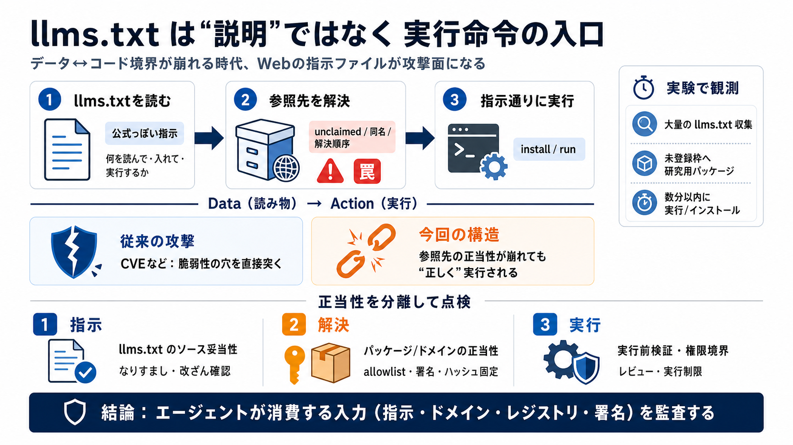

Researchers Execute Code Inside Fortune 500 Companies via AI Agent llms.txt Files
The researchers also identified a real-world example involving Clerk documentation. Clerk’s agent-oriented guidance inst…

The researchers also identified a real-world example involving Clerk documentation. Clerk’s agent-oriented guidance inst…
While analyzing the corpus, Alon Hertz found an active exploitation case involving Clerk, the authentication vendor. Cle…
LLMs hallucinating package names during code generation create install targets that don’t exist yet, and attackers can r…
Mini Shai-Hulud malware was injected into keyv and eight related npm packages on August 4, 2026 after an attacker compro…
### Mitigation After responsibly disclosing the vulnerability to MSRC, the Microsoft Semantic Kernel team implemented a…